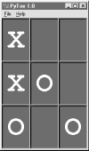
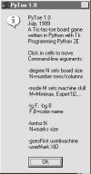
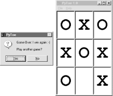

| I l@ve RuBoard |
|
9.8 PyToe: A Tic-Tac-Toe Game WidgetFinally, a bit of fun to close out this chapter. Our last example, PyToe, implements an artificially intelligent tic-tac-toe (sometimes called "naughts and crosses") game-playing program in Python. Most readers are probably familiar with this simple game, so I won't dwell on its details. In short, players take turns marking board positions, in an attempt to occupy an entire row, column, or diagonal. The first player to fill such a pattern wins. In PyToe, board positions are marked with mouseclicks, and one of the players is a Python program. The gameboard itself is displayed with a simple Tkinter GUI; by default, PyToe builds a 3-by-3 game board (the standard tic-tac-toe setup), but can be configured to build and play an arbitrary N-by-N game. When it comes time for the computer to select a move, artificial intelligence (AI) algorithms are used to score potential moves and search a tree of candidate moves and countermoves. This is a fairly simple problem as gaming programs go, and the heuristics used to pick moves are not perfect. Still, PyToe is usually smart enough to spot wins a few moves in advance of the user. 9.8.1 Running PyToePyToe's GUI is implemented as a frame of packed labels, with mouse-click bindings on the labels to catch user moves. The label's text is configured with the player's mark after each move, computer or user. The GuiMaker class we coded earlier in this chapter is also reused here to add a simple menu bar at the top (but no toolbar is drawn at the button, because PyToe leaves its descriptor empty). By default, the user's mark is "X", and PyToe's is "O". Figure 9-24 shows PyToe on the verge of beating me one of two ways. Figure 9-24. PyToe thinks its way to a winFigure 9-25 shows PyToe's help pop-up dialog, which lists its command-line configuration options. You can specify colors and font sizes for board labels, the player who moves first, the mark of the user ("X" or "O"), the board size (to override the 3-by-3 default), and the move selection strategy for the computer (e.g., "Minimax" performs a move tree search to spot wins and losses, and "Expert1" and "Expert2" use static scoring heuristics functions). Figure 9-25. PyToe help pop-up with options infoThe AI gaming techniques used in PyToe are CPU-intensive, and some computer move selection schemes take longer than others, but their speed varies mostly with the speed of your computer. Move selection delays are fractions of a second long on my 650 MHz machine for a 3-by-3 game board, for all "-mode" move-selection strategy options. Figure 9-26 shows an alternative PyToe configuration just after it beat me. Despite the scenes captured for this book, under some move selection options, I do still win once in awhile. In larger boards and more complex games, PyToe's move selection algorithms become even more useful. Figure 9-26. an alternative layout9.8.2 PyToe Source Code (on CD)PyToe is a big system that assumes some AI background knowledge and doesn't really demonstrate anything new in terms of GUIs. Partly because of that, but mostly because I've already exceeded my page limit for this chapter, I'm going to refer you to the book's CD (view CD-ROM content online at http://examples.oreilly.com/python2) for its source code rather than listing it all here. Please see these two files in the examples distribution for PyToe implementation details:
If you do look, though, probably the best hint I can give you is that the data structure used to represent board state is the crux of the matter. That is, if you understand the way that boards are modeled, the rest of the code comes naturally. For instance, the lists-based variant uses a list-of-lists to representation the board's state, along with a simple dictionary of entry widgets for the GUI indexed by board coordinates. Clearing the board after a game is simply a matter of clearing the underlying data structures, as shown in this code excerpt from the examples named above: def clearBoard(self):
for row, col in self.label.keys():
self.board[row][col] = Empty
self.label[(row, col)].config(text=' ')
Similarly, picking a move, at least in random mode, is simply a matter of picking a nonempty slot in the board array and storing the machine's mark there and in the GUI (degree is the board's size): def machineMove(self):
row, col = self.pickMove()
self.board[row][col] = self.machineMark
self.label[(row, col)].config(text=self.machineMark)
def pickMove(self):
empties = []
for row in self.degree:
for col in self.degree:
if self.board[row][col] == Empty:
empties.append((row, col))
return random.choice(empties)
Finally, checking for an end-of-game state boils down to inspecting rows, columns, and diagonals in the two-dimensional list-of-lists board in this scheme: def checkDraw(self, board=None):
board = board or self.board
for row in board:
if Empty in row:
return 0
return 1 # none empty: draw or win
def checkWin(self, mark, board=None):
board = board or self.board
for row in board:
if row.count(mark) == self.degree: # check across
return 1
for col in range(self.degree):
for row in board: # check down
if row[col] != mark:
break
else:
return 1
for row in range(self.degree): # check diag1
col = row # row == col
if board[row][col] != mark: break
else:
return 1
for row in range(self.degree): # check diag2
col = (self.degree-1) - row # row+col = degree-1
if board[row][col] != mark: break
else:
return 1
def checkFinish(self):
if self.checkWin(self.userMark):
outcome = "You've won!"
elif self.checkWin(self.machineMark):
outcome = 'I win again :-)'
elif self.checkDraw():
outcome = 'Looks like a draw'
Other move-selection code mostly just performs other kinds of analysis on the board data structure or generates new board states to search a tree of moves and countermoves. You'll also find relatives of these files in the same directory that implement alternative search and move-scoring schemes, different board representations, and so on. For additional background on game scoring and searches in general, consult an AI text. It's fun stuff, but too advanced to cover well in this book. |
| I l@ve RuBoard |
|